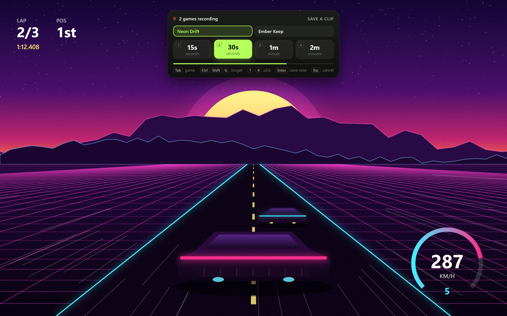
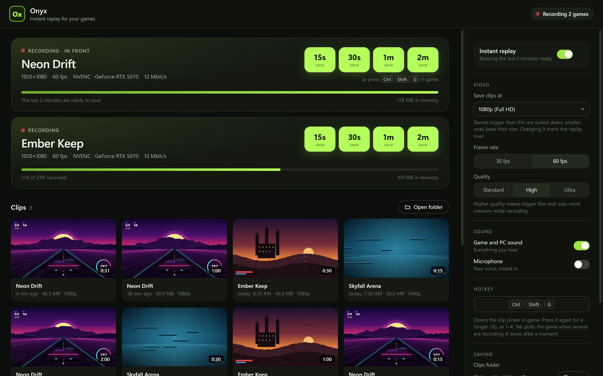
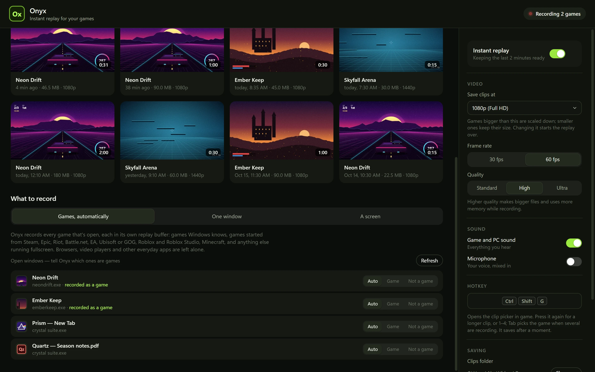

Instant replay for every game you play
Onyx keeps the last two minutes of your games ready to save. When something great happens, press Ctrl+Shift+G and keep it as a clip.

Never miss the moment
Save it after it happens
The last two minutes are always kept. Pick 15 or 30 seconds, 1 or 2 minutes, and it’s an MP4 in Videos\Onyx.
Finds your games
Games Windows knows, games from Steam, Epic, Riot and other launchers, Roblox, Minecraft and anything fullscreen.
Several games at once
Each open game has its own replay buffer. In the picker, Tab chooses which one to save.
Easy on your frame rate
Captured and encoded on the graphics card (NVIDIA, AMD or Intel), with only compressed video kept in memory.
Your size, your sound
The game’s own size or 2160p down to 480p, at 30 or 60 fps, with game sound and your microphone if you like.
Always ready
Starts with Windows in the tray. Your clips are in the Onyx window, with previews and a player.


Onyx: FAQ
Does Onyx work with Roblox?
Yes. Onyx recognises Roblox and Roblox Studio, Minecraft and games from Steam, Epic, Riot and other launchers, and records anything running fullscreen.
Will Onyx lower my frame rate?
Onyx captures and encodes on your graphics card (NVIDIA NVENC, AMD or Intel Quick Sync) and only keeps compressed video in memory, so games keep their frame rate.
Where are the clips saved?
As MP4 files in your Videos\Onyx folder, ready to share.
Get Onyx free
Onyx is part of Crystal Suite: install the launcher, then add Onyx with one click.